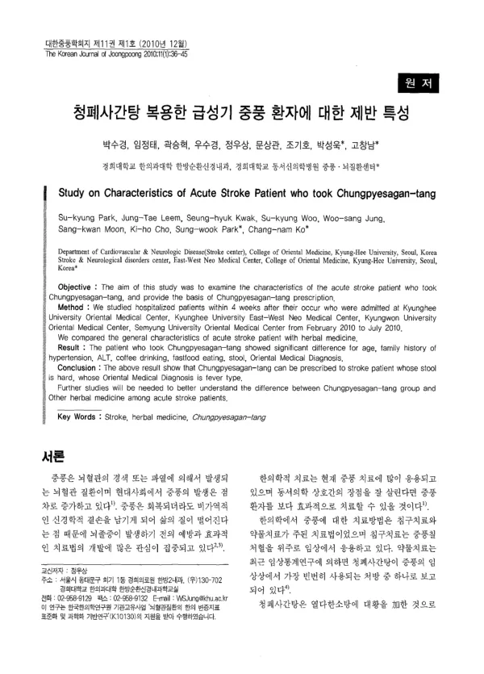

청폐사간탕 복용한 급성기 중풍 환자에 대한 제반 특성
Park Sk, Leem Jt, Kwak Sh, Woo Sk, Jung Ws, Moon Sk, Cho Kh, Park Sw, Ko Cn
The Korean Journal of Joongpoong 11(1):36-45

첫 장 · 오픈액세스First page · open access
논문 소개Summary
급성기 중풍으로 입원해 청폐사간탕을 복용한 환자들이 어떤 특성을 보이는지 본 연구입니다. 2010년 2월부터 7월까지 경희대학교 한방병원과 동서신의학병원, 경원대학교 한방병원, 세명대학교 한방병원에 발병 4주 안에 입원한 환자를 모아, 다른 한약을 쓴 환자들과 일반적 특성을 견주었습니다. 청폐사간탕군은 나이와 고혈압 가족력, ALT, 커피와 패스트푸드 섭취, 대변 상태, 한의 변증에서 차이를 보였습니다. 저자들은 대변이 단단하고 변증이 열증인 환자에게 이 처방을 쓸 수 있다고 보면서, 다른 한약군과의 차이를 제대로 밝히려면 후속 연구가 필요하다고 덧붙였습니다.
What characterises acute stroke inpatients who were given Chungpyesagan-tang. Patients admitted within four weeks of onset to the Korean medicine hospitals of Kyung Hee University, the East-West Neo Medical Center, Kyungwon University and Semyung University between February and July 2010 were collected, and their general characteristics compared with those of patients given other herbal prescriptions. The Chungpyesagan-tang group differed in age, family history of hypertension, ALT, coffee and fast-food intake, stool condition and pattern identification. The authors concluded that the prescription suits patients with hard stool whose pattern is a heat type, adding that further study is needed before the differences from other herbal groups can properly be established.
인용Cite
Park Sk, Leem Jt, Kwak Sh, Woo Sk, Jung Ws, Moon Sk, Cho Kh, Park Sw, Ko Cn. 청폐사간탕 복용한 급성기 중풍 환자에 대한 제반 특성. The Korean Journal of Joongpoong. 2010;11(1):36-45.